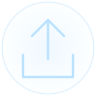

内
ファイルはあなたのブラウザ内だけで処理され、どこにもアップロードされません。
対応: 画像 JPEG / PNG / WebP / HEIC / AVIF ・ 動画 MP4 / MOV(Sora等のC2PA来歴にも対応)。上限300MB。
対応: 画像 JPEG / PNG / WebP / HEIC / AVIF ・ 動画 MP4 / MOV(Sora等のC2PA来歴にも対応)。上限300MB。

画像・動画をここへ ドロップ / タップして選択 / Enter・SpaceFile information
ファイル情報の手掛かり
上のAIスコアとは別の検査です。ここに並ぶ手掛かりの件数・画像サイズ・撮影情報の有無を、AIスコアに加点する仕組みではありません。
Next step
逆画像検索へ渡す
メタデータが消されていても、逆画像検索で「盗用元の別人」や「同じ画像の使い回し」が見つかることがあります。 下記サービスを開き、同じ画像ファイルを検索窓にドラッグしてください。
判定の限界: メタデータは編集・削除できます。「痕跡なし」は人間の証明にはならず
(SNS・スクリーンショット経由でメタデータは消えます)、「カメラ情報あり」も偽装可能です。
C2PA署名の暗号学的検証は
Content Credentials Verify(公式)
でも確認できます。
使いどころ
- SNSで見かけた「実在するか怪しい人物」の画像の一次チェックに
- 自分の作品・写真に来歴データ(C2PA)が正しく付いているかの確認に
- フリマ・マッチングアプリのプロフィール画像の検証に(可能なら「元データ」を入手して調べるのが有効)